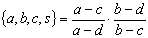

The riemann project currently contains two public sub-packages:
de.jtem.riemann.schottky
and
de.jtem.riemann.theta.
Both packages implement the current state of research in this field. A third package concerning algebraic curves and coverings is subject of a major refactoring and will be published as soon as possible.
This tutorial gives an introduction to the major functionality of these packages and closes with an example: KP2 Equation - Shallow Water Waves.
This package implements the numerical methods and algorithms presented in [Sch05, Chapter 3] for the evaluation of certain automorphic functions and forms in the context of Schottky uniformization. A classical theorem states that for any Riemann surface R exists a Schottky group G such that is conformally equivalent to the quotient W/G, where W denotes the set of discontinuity of G. A Schottky group is a free, finitely generated, discontinuous group that is purely loxodromic, i.e., a Schottky group of rank N, which equals the genus of the associated Riemann surface, can always be generated by N loxodromic transformations s1,...,sN. Further a loxodromic transformation si can be defined by its fixed points Ai and Bi and the loxodromic factor mi, with |mi|<1.
Thus all Schottky groups of rank N can be associated to a list of 3N complex
values
S = { A1, B1, m1, ... , AN, BN, mN }
which is called the Schottky data. Not any 3N complex numbers define a Schottky group, but there exists a convenient sufficient criterion which is related to the notion of iso-classical Schottky groups. For any loxodromic transformation exists a unique pair of circles having the same radii, which are mapped by the transformation onto each other. These circles are called isometric circles. The differential of the transformation takes on the absolute value 1 one the circle. A Schottky group is called iso-classical if all the isometric circles of the generators are exterior to each other. This can be easily checked for a set of generators and it is easy to see that such a set generates a free, finitely generated, discontinuous group, which is therefore a Schottky group. The exterior of the isometric circles of a classical Schottky group define a fundamental domain for the quotient W/G, i.e., it maps conformally one-to-one to the associated Riemann surface. It is not clear that all Riemann surfaces can be uniformized by a iso-classical Schottky group. Thus, the fact that the numerics only deals with iso-classical Schottky groups means a limitation.
The strength of this approach is that functions and differentials of the
Riemann surface W/G must be
automorphic W. For normalized
differentials of first kind exist closed representations as (-2)-dimensional
Poincare theta series:
where Gn denotes the subgroup of generated by the generator
sn and Gn\G defines the cosets.
Elementary computations deliver further formulas for the integrals of first kind
and the period matrix
where the curly brackets indicate the cross-ratio
.
The series above do not always converge and it is challenging to evaluate them in a stable manner.
The numerics in this package allow the evaluation of several other series:
and
The major drawback of this method is that the series above, which we will simply refer to as Schottky series, do not converge in the general case and that there is no general criteria in sight. However, for many special cases criteria exist.
In [Sch05, Chapter 3] sufficient criteria are presented that can be easily evaluated by a computer. The (integral) series (3), (4), (6), (7), and (8) converge if the limit qW� of the monotonously decreasing series qWk is smaller then 1. The (differential) series (2), (5), and (9) have similar critirea. They converge if the limit of the monotonously decreasing series (qwk ) is smaller than 1. The computation of (q*k ) involves to generate all group elements up to word length l+1. For groups of higher order one should therefore choose carefully how many terms of the series (q*k ) are used to check the criteria. The monotone series (q*k ) converge very fast and in our experience, one should give up if the third term is still not smaller one. The series can only be evaluated stably, if it converges sufficiently fast, which only is the case if the limit is significant smaller then one.
The front-end for the evaluation of the Schottky series is provided by the
class Schottky which extends the class SchottkyData. The main
purpose of the class SchotttkyData is to provide a nice front end to
configure Schottky data and to check whether the data generates a classical
Schottky group. SchottkyData provides a huge variety of methods allowing
the manipulation of a fixed number of generators. We recommend to create the
Schottky data using this class and finally passing the data to an instance of
the evaluation class Schottky. To create the Schottky data

with A, m �C for in the Helicoid He2 you can either write
schottkyData = new SchottkyData(
new Complex[] { A, A.neg(), mu,A.conjugate().neg(), A.conjugate(), mu } )
or configure the object sequentially and write
schottkyData = new SchottkyData( 2 );
schottkyData.setA( 0, A );
schottkyData.setB( 0, A.neg() );
schottkyData.setMu( 0, mu );
schottkyData.setA( 1, A.conjugate().neg() );
schottkyData.setB( 1, A.conjugate() );
schottkyData.setMu( 1, mu );
Before you pass the Schottky data to the evaluator class Schottky, you should check whether the data generates a classical schottky group and call
schottkyData.isClassical().
Otherwise you run the risk of getting a RuntimeException when you pass the data to the evaluator, which you can do at its instanciatino:
schottky = new Schottky( schottkyData );
or afterwards with
schottky.setUniformizationData( schottkyData ).
At this moment some precomputation steps are performed including the generation of all elements of the Schottky group up to word length 2. All other elements are computed and stored in a tree the first time they are needed for the evaluation of a term. Once elements are added to the tree, they are not removed unless the entire instance is destroyed. When the group is changed, i.e., the Schottky data changes, the instances for the group elements are merely updated (but only on demand). This is crucial for the performance, because the tree can get very big. We had examples where we dealt with several hundred thousand group elements. The default accuracy for the evaluation of the Schottky series is 10-7, which is mutable bean property of class Schottky.
Before you start to compute the Schottky series you should assure that the implemented algorithms are able to evaluate them. According to the discussion above we have different criteria for ``differential'' and ``integral'' series, which you can query by calling
schottky.isDifferentialSeriesEvaluable()
and
schottky.isIntegralSeriesEvaluable().
The methods checks for q*l <C, with the default values l=2 and C=0.5. These default values are also mutable properties of the class Schottky, but they should only be altered with care (see discussion above). Now you are ready to evaluate the Schottky series.
To evaluate the period matrix you can simply write
ComplexMatrix B = schottky.getPeriodMatrix().
The Abelian differential wn are nevaluated at the position z in the fundamental domain F by
Complex r = schottky.abelianDifferentialOf1stKind( z, n )
and the integral of first kind by
Complex r = schottky.abelianIntegralOf1stKind( z, n ).
Because of performance reasons the code does not check whether the position z is valid. If the the argument z is in one of the isometric circles the algorithm can fail and the code will throw a RuntimeException, but first it will create the maximum number of possible group elements (default: 200,000). This is certainly to be avoided; if your are not sure that an argument is valid, you should test this with
schottky.isInFundamentalDomain( z )
in forehand.
All methods for evaluating Schottky series are overwritten with versions that allow the prescription of a specific accuracy, e.g. ,
ComplexMatrix B = schottky.getPeriodMatrix( 0.001 )
evaluates the period matrix with an accuracy of 0.001 instead of the default accuracy. A different type of overwritten methods enables to provide an instance for the result, which helps to relieve the garbage collector. The call
schottky.abelianDifferentialOf1stKind( r, z, n )
evaluates wn at z and returns the result in r, for example.
This package implements the methods and algorithms presented in [Sch05, Chapter 3] for computing riemann theta functions including those with characteristics. An important ingredient for the computation of Riemann theta function are modular transformations and Siegel�s Reduction algorithm for which the package also offers public interfaces.
The Riemann theta function is a complex-valued function of g
complex variables and defined by
where z�Cg and B is a symmetric g-dimensional matrix with strictly negative definite real part. Be aware that there are many different conventions of writing the theta functions and that you therefore might have to perform a scaling of the arguments to adapt it to yours.
The complex matrix B is usually the period matrix of a given Riemann surface and computing it is a hole different story. The Schottky uniformization as described in the previous Section offers one way of calculating it.
Suppose you have a valid period matrix B: To evaluate Riemann theta functions create an instance of the central class of this package:
theta = new Theta( B ).
The period matrix is the most important property of the class Theta. You can change it by calling
theta.setPeriodMatrix( B ).
This will trigger some pre-calculation steps. The implementation is optimized to evaluate the Riemann theta function many times for a fixed period matrix. Thus, setting the period matrix takes much longer then evaluating the function. Unfortunately, it is not possible to be more precise, because the expenditure depends on the period matrix (especially its genus) and the configuration of the evaluating instance.
Complex r = theta.theta( z )
evaluates the Riemann theta function at the argument z�Cg. Following the philosophy of the whole project, there exist also overloaded methods which allow to prescribe the result as a parameter:
theta.theta( z, r ).
These functions are not particularly useful because the Riemann theta function
grows exponentially and in practice you might easily leave the range of the
double precession representation. It is therefore necessary to separate the
exponential growth from the oscillating part of the function:
 ,
,
with f(z|B) being a quadratic function in z, see [Sch05, Chapter 3].
theta.theta( z, f, o )
evaluates the Riemann theta function in the form from above with
f=f(z|B)
and o=qS(z|B).
The accuracy of the evaluation always refers to the oscillating part o
only and is by default 10-7.
In almost all applications theta functions are used to compute Abelian functions,
which can be expressed as ratios of theta functions. Thus, the exponential
factors usually almost cancel. Typical examples are of the form:
Since the vectors a,b�Cg are relatively small the exponential factor is about 1. An implementation of this function could look like:
package helicoid.example;
import mfc.field.Complex;
import blas.ComplexMatrix;
import blas.ComplexVector;
import riemann.theta.Theta;
public class SimpleAbelianFunction {
ComplexMatrix B;
ComplexVector a, b;
Theta theta;
public SimpleAbelieanFunction( ComplexMatrix B,
ComplexVector a,
ComplexVector b ) {
this.B = new ComplexMatrix(B);
this.a = new ComplexVector(a);
this.b = new ComplexVector(b);
theta=new Theta(B);
}
public Complex valueAt( ComplexVector z ) {
theta.theta( z.plus(a), f_a, o_a );
theta.theta( z.plus(b), f_b, o_b );
return Complex.exp( f_a.miuns( f_b ) ).times( o_a ).divide( o_b );
}
}
The implementation is not optimal if the function needs to be evaluated many times, because it creates six unnecessary instances for intermediate results. This can be avoided by using the mutable programming style, see de.jtem.mfc.
The API also offers functions for the first and second derivative of the theta function with respect to z.
Complex r = dTheta.theta( z, X )
computes the partial derivative of theta in direction of X.
Again this method is overloaded by a version that separates the exponential
growth of the derivative from the oscillating part:
with f being the same quadratic function as for the Riemann theta function itself.
dTheta.theta( z, X, f, o, dxo )
evaluates the function and the derivative simultaneously with f=f(z|B), o=qS(z|B), and dxo=(DXq)S(z|B). Evaluating the function causes almost no extra cost and in many applications, e.g., logarithmic derivatives, you need the function value in addition to its derivative. Evaluating the second derivative works similar.
The error estimates for the derivative of the Riemann theta function are much more complicated than for the function itself. Therefore, we implemented the derivatives of the approximation instead of approximating the derivative. In almost 10 years experience in computing theta functions we never encountered any practical problems caused by inaccuracies of the derivatives, but in theory badly conditioned scenarios are likely to occur for large arguments z.
There are three important boolean properties that configure the evaluation algorithm of the Riemann theta function:
By default all properties are set to true, but in certain situations different configurations may lead to better results.
The fill factor error (FFE) is a heuristic value to sharpen the error estimates for theta functions, which can drastically reduce the number of terms needed to approximate the oscillating part, see [DHB+04] for details. The drawback of using the FFE is that the prescribed accuracy is not guaranteed anymore. Tests have shown that in practice the FFE is usually good enough. When accuracy is your concern rather than performance you might want to set this property to false.
The second property allow for the choice between uniform and pointwise approximation. For genus smaller than five uniform approximation is usually faster than pointwise. For higher genus pointwise approximation seems better, but that always depends on the specific case. The uniform approximation consumes some pre-calculation time, thus, if you only need to evaluate the theta function a few times for a fixed period matrix the pointwise approximation can also perform better for small genus. If performance is an important issue in your application you should try both possibilities; consult [Sch05, Chapter 3, Section 3.3] for a more complete discussion.
The last propertiy controls whether Siegel's reduction algorithm is performed when the period matrix is set. Switching it off is only sensible in situations where you already know that your period matrix is not reducible by Siegel's algorithm. But this will only have a significant impact if you have no more than a few function evaluations for a fixed period matrix.
We like to give an example implementation which combines the capabilities of the de.jtem.riemann.schottky and de.jtem.riemann.theta packages.

Figure: Snap-shot of a webstart application visualizing shallow water waves computed as solutions of the KP2 equation using Schottky uniformization as described above. The application was generated using Java Oorange. The 3D-graphics utilizes jReality. This and other applications using the jtem library can be downloaded from http://www.math.tu-berlin.de/geometrie/lab/ .
To start the java webstart application click onto the image.
The equations
4uxt + 3(u2)xx ± uxxxx - 3uyy = 0
discovered by Kadomtsev & Petviashvili (KP) are a generalization of the Korteweg & deVries (KdV) equation. For positive sign of the uxxxx term it is called KP2 equation. Solutions of the KP2 equation describe the evolution of gravity-induced waves of moderate amplitude on shallow water of uniform depth when the waves are nearly one-dimensional.
For Schottky data
S = { A1, B1, m1, ... , AN BN, mN }
with
Bi=Ai
and
mi�R yield all real
non-singular finite-gap solutions of the KP2 equation and can be described by
Krichever's formula
The parameters in this formula can be given by Poincare series. It is
U=Vn,1, V=Vn,2, and W=Vn,3 with
and
and D is an arbitrary imaginary vector [BBE+94] .
The code below shows an implementation of this solution using the efficient mutable programming style, see de.jtem.mfc .
package de.jtem.riemann.example;
import mfc.field.Complex;
import riemann.schottky.*;
import riemann.theta.*;
import blas.*;
public class KP2 {
Schottky schottky;
Theta theta;
ComplexVector U, V, W, Z, T;
Complex c;
public KP2( Complex [] A, double [] mu, double eps ) {
SchottkyData data = new SchottkyData( A.length
);
for( int i=0; i<A.length; i++ ) {
data.setA( i, A[i] );
data.setB( i, A[i].conjugate() );
data.setMu( i, mu[i], 0 );
}
if( !schottkyData.isClassical() )
throw new IllegalArgumentException
( "schottky data is not classical");
schottky = new Schottky( schottkyData, eps );
if( !schottky.isSeriesEvaluable() )
throw new IllegalArgumentException( "can not evaluate series");
U = schottky.getV();
V = schottky.getV(2);
W = schottky.getV(3);
c = schottky.gamma();
Z = new ComplexVector( U.size() );
T = new ComplexVector( U.size() );
Theta theta = new Theta( schottky.getPeriodMatrix(), eps );
}
public Complex valueAt( double x, double y,
double t ) {
Z.assignTimes( U, x );
T.assignTimes( V, y ); Z.assignPlus( T );
T.assignTimes( W, t ); Z.assignPlus( T );
Complex result = theta.ddLogTheta( Z, U, U );
result.assignPlus(c);
result.assignTimes(2);
return result;
}
}
[BBE+94] E.D. Belokolos, A. I. Bobenko, V. Z. Enol'skii, A. R. Its, and V. B. Matveev. Algebro-Geometric Approach to Nonlinear Integrable Equations. Nonlinear Dynamics. Springer Verlag, 1994.
[DHB+04] B. Deconinck, M. Heil, A. I. Bobenko, M. van Hoeij, and M. Schmies. Comput Riemann theta Functions. Math. Comp., 73(247):1417-1442 (electronic) 2004. (.pdf)
[Dub81] B. A. Dubrovin. Theta functions and non-linear equations. Russ. Math. Surv., 36(2):11-92, 1981.
[Kri78] I. M. Krichever. Algebraic curves and non-linear difference equations. Russ. Math. surv., 33(4):255-256, 1978.
[Sch05] M. Schmies. Computational Methods for Riemann Surfaces and Helicoids with Handles. PhD thesis, Technische Universit�t Berlin, 2005. (.pdf)
Markus Schmies 2006-01-14